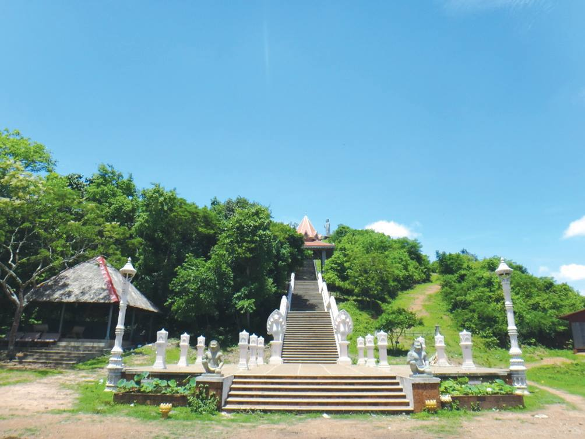
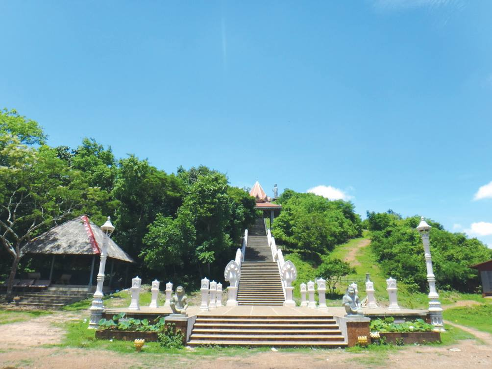

ភ្នំជីតាពេជ្រមានទីតាំងស្ថិតនៅក្នុងភូមិ វត្តភ្នំ ឃុំកំពែង ស្រុកគិរីវង់ ខេត្តតាកែវ មានចម្ងាយ២៥គីឡូម៉ែត្រពីផ្លូវជាតិលេខ២ត្រង់ចំណុចវត្តឧទ្ទម្ពរខាងជើងផ្សារទន្លាប់១០០ម៉ែត្រឆ្ពោះទៅទិសខាងលិច និង៦៥គីឡូម៉ែត្រពីក្រុងដូនកែវ។ រមណីយដ្ឋាននេះ ផ្តើមកសាងឡើងដោយឧបាសិកា តាន់ វិចហុង ដោយចំណាយអស់ទឹកប្រាក់សរុបចំនួន៤៩៥ ០០០ដុល្លារសហរដ្ឋអាមេរិក ចំណាយទៅលើការកសាងជណ្តើរបេតុងឡើងលើកំពូលភ្នំប្រវែង១៧០ម៉ែត្រស្មើនឹង២៤៣កាំ សាលាដំណាក់ចំនួន៤ បន្ទប់អនាម័យ ព្រះពុទ្ធរូបអង្គតូច១ធ្វើអំពីថ្មភក់ រូបសំណាកតាបស១អង្គធ្វើពីថ្មភក់ និងរូបសំណាកព្រះពុទ្ធទ្រង់ឈរលើបល្ល័ង្កនៅលើកំពូល ភ្នំកម្ពស់១៣.៥០ម៉ែត្រធ្វើអំពីថ្មភក់។ភ្នំជីតាពេជ្រ ជាទីតាំងបុរាណ និងជាដែនដីសុវណ្ណភូមិ ក៏ជាដែនដីនគរភ្នំ (ហ៊្វូណន) ម្យ៉ាងជាទីកន្លែងសក្ការៈដ៏ស័ក្តិសិទ្ធិសម្រាប់បន់ស្រន់សុំទឹកភ្លៀង តាំងពីដើមរៀងមក។ ។ ភ្នំនេះមានកាំជណ្តើរបេតុងឡើងលើកំពូលភ្នំប្រវែង 170ម៉ែត្រ ស្មើនឹង 243កាំ ព្រមទាំងមានសង់ព្រះពុទ្ធបដិមា មួយអង្គយ៉ាងធំ នៅលើកំពូលភ្នំ កម្ពស់5ម៉ែត្រ ធ្វើអំពីថ្មភក់ ដោយអមជាមួយនិងដងភ្នំតូចធំផ្សេងទៀតដែលនៅព័ទ្ធជុំវិញនោះពោរពេញទៅដោយបរិយាកាសបរិសុទ្ធព្រមទាំងភ្ញៀវទេសចរអាចទស្សនានូវទេសភាពធម្មជាតិដ៏ល្អប្រណិតនៃស្រុកគិរីវង់ទាំងមូលផងដែរ។
ភ្នំជីតាពេជ្រជាឈ្មោះ និងជាទីកន្លែងមួយដែលបច្ចុប្បន្នត្រូវបានគេស្គាល់ច្រើន ក្នុងមជ្ឈដ្ឋានអ្នកចូលចិត្តដើរលេងកម្សាន្តតាមទីជិតឆ្ងាយ ពីព្រោះភ្នំជីតាពេជ្រគឺជា រមណីយដ្ឋានទេសចរណ៍ដែលទើបនឹង បង្កើតឡើងរបស់ទឹកដីចំណាស់ខេត្តតាកែវ។ អ្នកដើរកម្សាន្តបាននិយាយពីភាពល្បីពីមាត់មួយទៅមាត់មួយជាហេតុនាំឲ្យអ្នកទេសចរចង់ដឹងអំពីស្ថានភាពទីតាំង និងប្រវត្តិដើមភ្នំជីតាពេជ្រនេះឲ្យរឹតតែច្បាស់ព្រោះសម្រាប់អ្នកដែលពុំបានឃើញចង់ដឹងទាំងស្រុង ចំណែកអ្នកស្គាល់ហើយ រមែងមានចម្ងល់ពីប្រវត្តិដើមកំណើតទីតាំងនេះជាមិនខាន។
 
